About Me
I am an Electrical Engineering student at the University of Washington Bothell aspiring to be a hardware engineer.
Projects
UWB Supermileage | Auxillary Component Controller PCB
Altium Designer | C | STM32F446RET6
Firmware on GitHubA 4 layer PCB that allows the driver to control the peripheral components of the EV such as the headlights, turn signals, hazard lights, the windshield wiper, and the horn, as well as displaying the vehicle's speed.
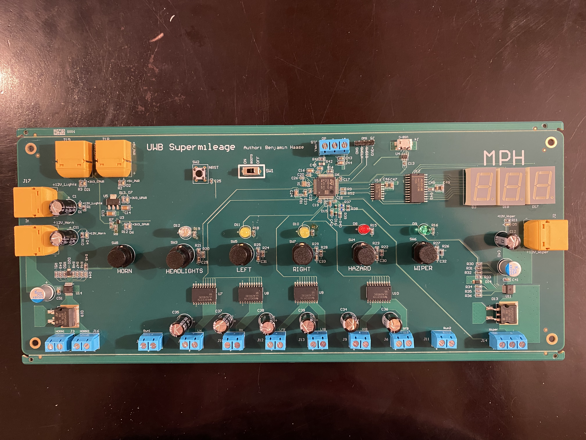
View Schematics & Technical Details
Schematics
PCB Layout (Altium Designer)
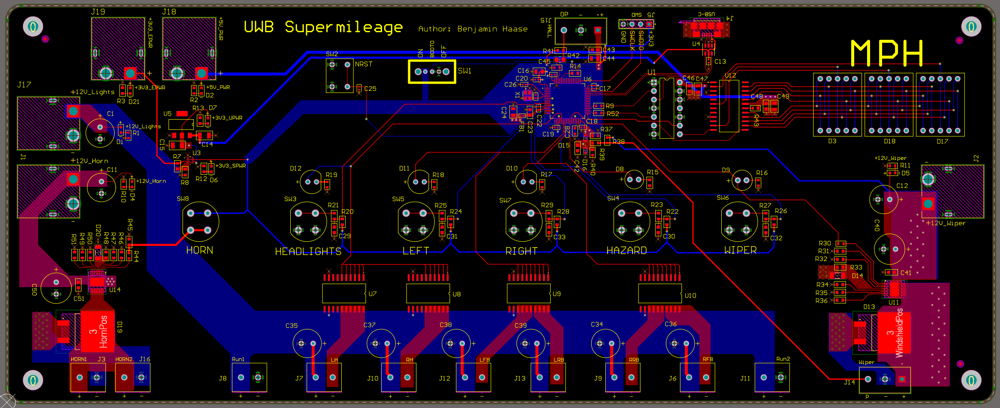
Tremolo Effect Pedal Mixed-signal PCB
Altium | LTspice | Bare-Metal C
Firmware on GitHubA Tremolo effect pedal for passive bass guitars. It uses a passive peak finder and an ADC circuit to create an effect that is responsive to musicians dynamics. The attack and decay of the effect can be controlled by the musician via two potentiometer knobs.
I am currently in the process of assembling this board.

Schematics
LTspice Simulation, Modulation depth
From a simulation of an ideal circuit, we see how the the control voltage (blue) effects amplitude modulation on the input signal (green). The output is the turquiose signal.

PCB Layout (Altium Designer)

Bass Guitar Fuzz Effect Pedal PCB
Altium | LTspice
A modern chainable Fuzz pedal with a vintage sound for the bass guitar. I am still in the process of getting this board manufactured and assembled.
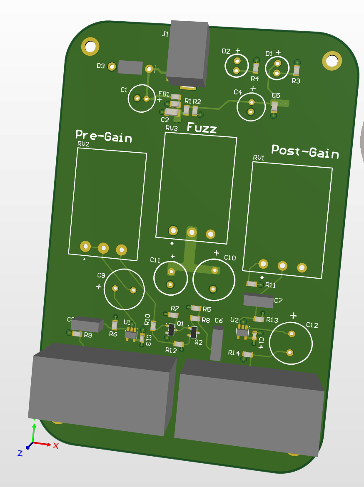
Schematics
PCB Layout (Altium Designer)
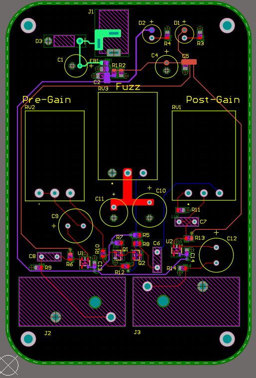
LTspice Simulation
This simulation was with the pre-gain turned all the way off, i.e the pre-gain potentiomter was at a full 50K Ohms of resistance. We see how the audio signal (in blue) is allowed to develop fully. By attenuating the signal no distortion occurs.
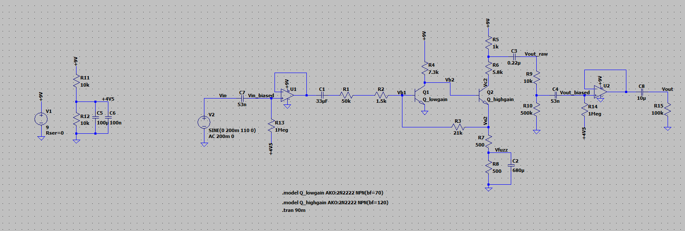
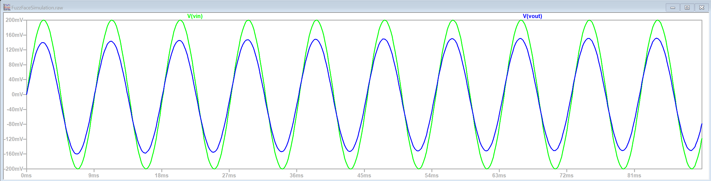
This simulation was with the pre-gain turned up to about half way. We see how only the bottom half of the audio signal (in blue) is clipped giving a warm overdrive tone.
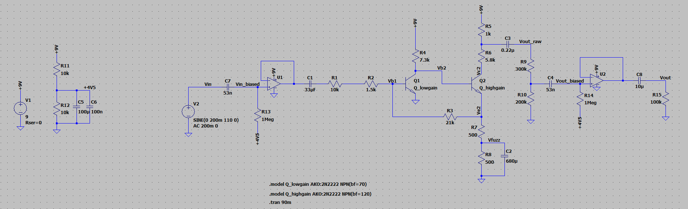
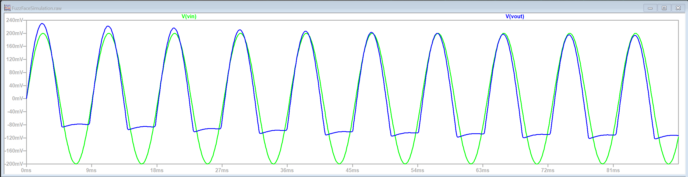
This simulation was with the pre-gain turned up all the way. We can see that the amplifier cuts off both the top and the bottom, however the clipping is still asymetrical giving the vintage fuzz tone.
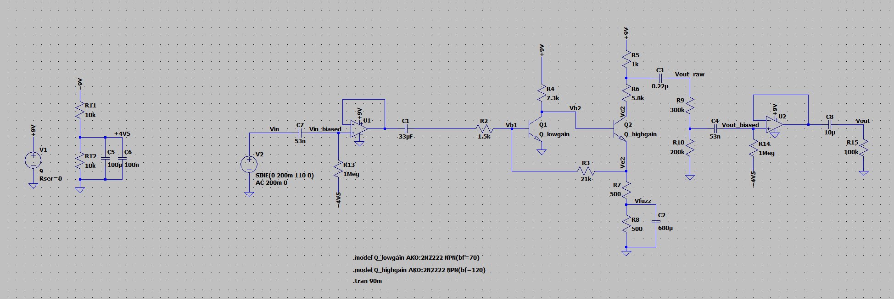
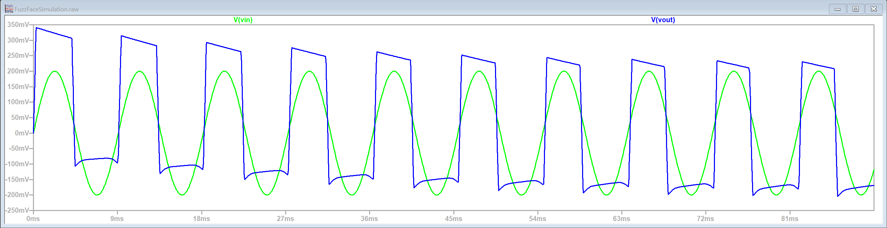
Frequency Response
Using the pre-gain turned up half way (i.e to 25K Ohms), we see the frequency response of the output voltage is that of a high pass filter. By carefully selecting the values of the coupling capacitors and fuzz potetiometer capacitors, I ensured that our lowest frequency (31 Hz for the low B string) was well within the pass band.
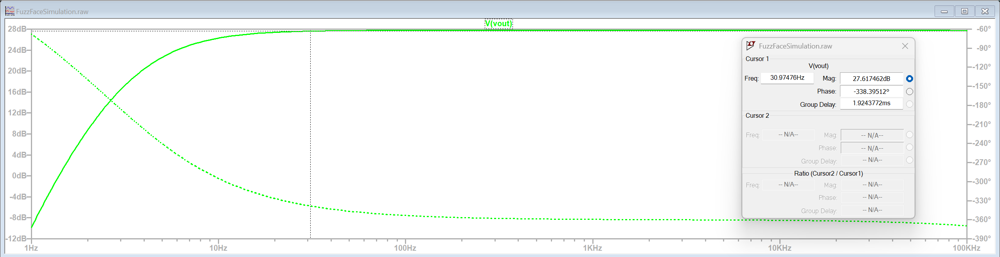